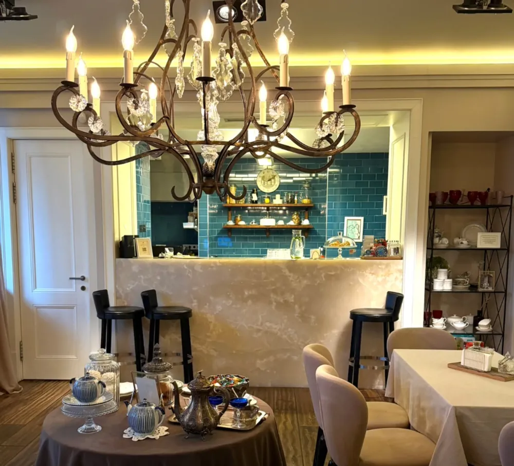
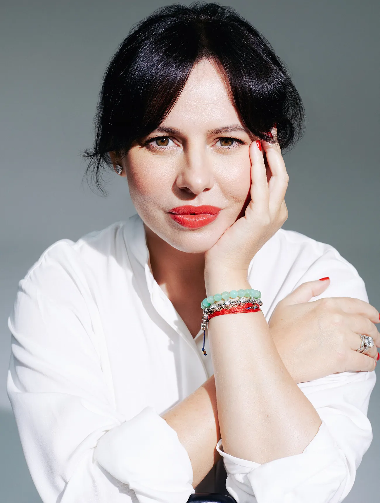
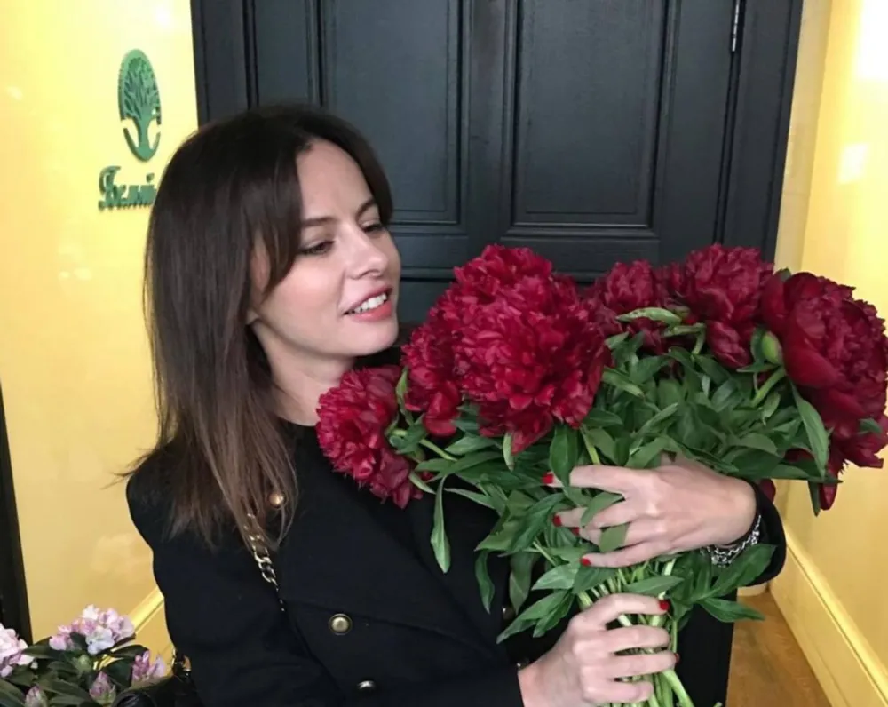
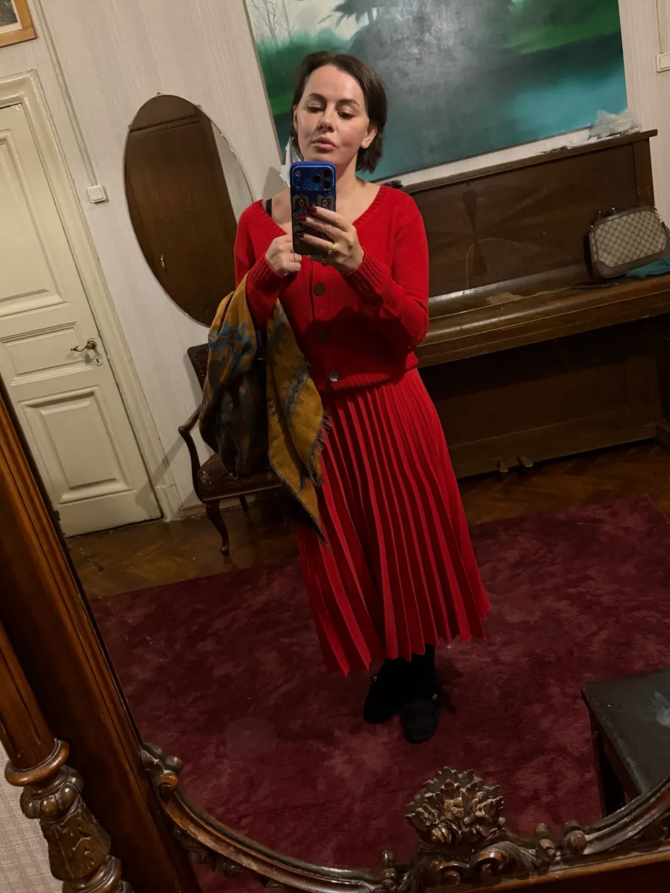
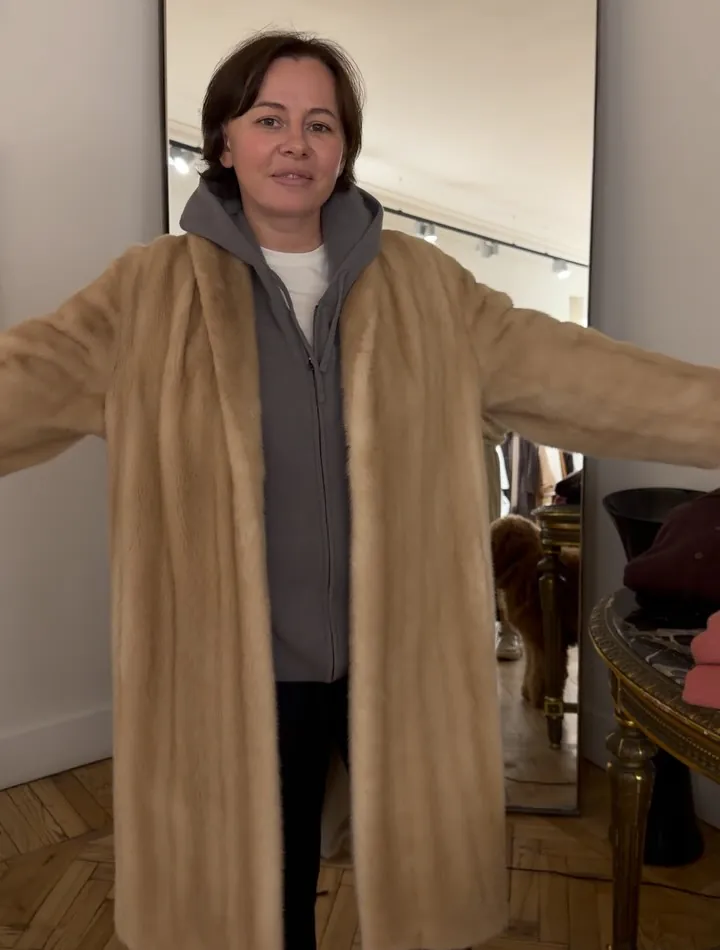
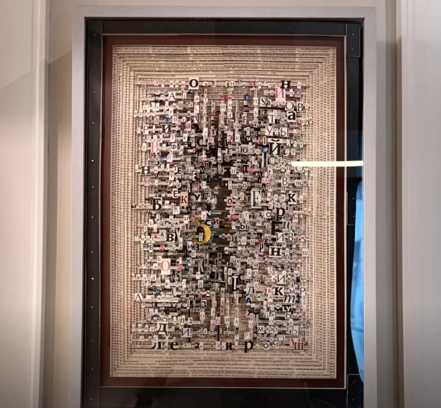
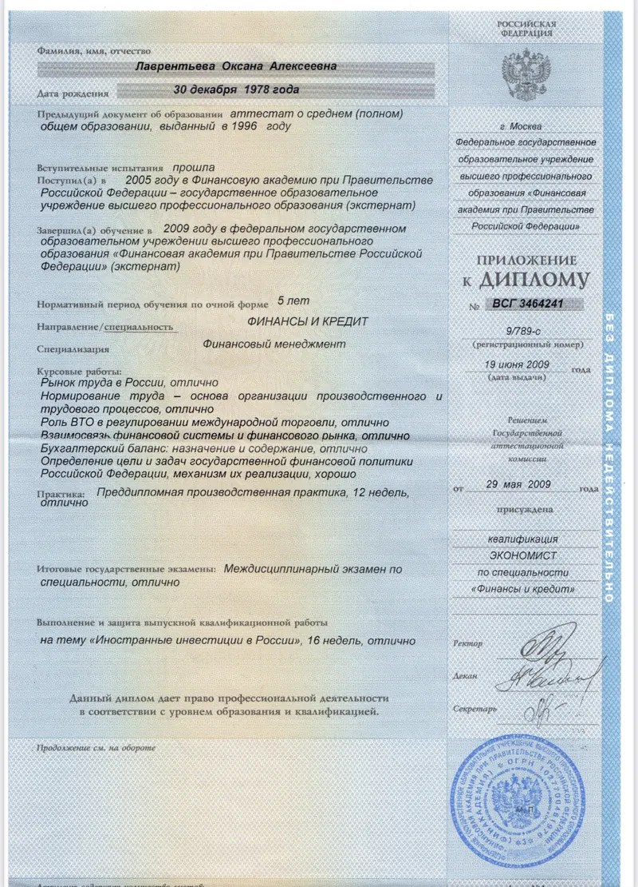
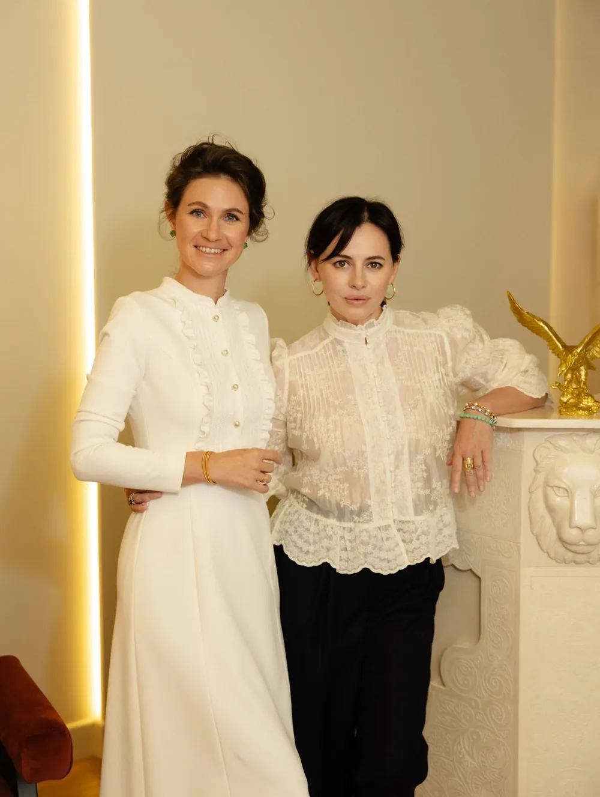
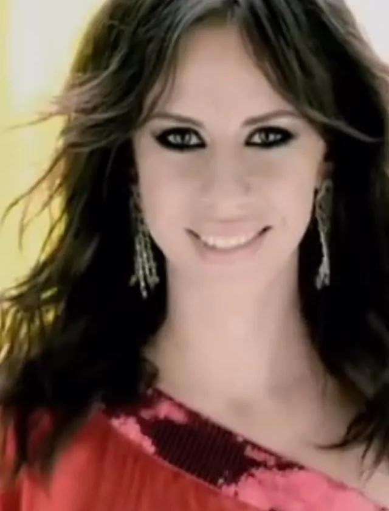

«Белый сад»
- Основан
- 2011, Зубовский бульвар
- Оборот
- 500 млн ₽ в год
Центры здоровья и красоты. Не «остро-модный» интерьер, а дом: натуральный камень, стойка из оникса, кафе с завтраками для гостей.
Executive-коуч. Предприниматель. Помогаю собственникам и руководителям проходить кризисы и принимать решения, после которых бизнес и жизнь выходят на новый уровень.
| Пиковый оборот бренда Alexander Terekhov, которым она владела и управляла 10 лет | 15млн € |
|---|---|
| Оборот в год центров красоты «Белый сад», основаны в 2011 | 500млн ₽ |
| Оборот в год бренда одежды OLOLOL, основан в 2021 | 400млн ₽ |
| Одна сессия. Первая всегда онлайн | 60минут |
200 000 ₽ · 60 минут · онлайн
Годовой отчёт предпринимателя2026

Я пришла в коучинг не из теории. Десять лет я управляла брендом Alexander Terekhov, в 2011 открыла первый «Белый сад» на Зубовском, в 2021 — бренд OLOLOL. Я знаю, каково отвечать за людей, деньги и решения, о которых нельзя посоветоваться с командой.
Параллельно я училась: магистратура ВШЭ по психоанализу и психоаналитическому бизнес-консультированию, четыре года у Клаудио Наранхо, лидерство в INSEAD у Манфреда Кетс де Вриса, трансперсональная психология в Пневма Институте.
На сессию приходят с одним запросом, а уходят с пониманием, что на самом деле держало их на месте. Я не обещаю чудес за час. Я обещаю честный разговор с человеком, который сам прошёл путь собственника.
Оксана Лаврентьеваоснователь «Белого сада» и OLOLOL, акционер Independent Media


С этого вопроса Оксана часто начинает сессию. Попробуйте ответить честно: отметьте три или больше слов, которые первыми приходят в голову.
Отмечено: 0 из 3
Вы — .
«А вы знаете, что все эти качества есть в вас? Вы бы не увидели их во мне, если бы сами ими не обладали».
Так Оксана ответила клиентке на первой сессии. Клиентка рассказала об этом в отзыве: в тот момент она расплакалась и поняла, что загнала себя и обесценила.
Разобрать это на сессииИз отзывов клиентов на сайте Оксаны. Имён нет: так решили сами клиенты.
| Точка А | Точка Б | |
|---|---|---|
| Живёт одна с ребёнком в Липецке. Не может простить отца и построить счастливые отношения. | 2 сессии | Гармоничные отношения, переезд в Москву. Свой Telegram-канал, зовут на выступления и интервью, пришли новые клиенты. |
| 14 лет на руководящей должности в крупнейшем российском банке. Выгорание и один вопрос: «как жить дальше?» | 1 сессия | Поняла, что менять нужно не внешние обстоятельства, а состояние. Увидела, как строить жизнь после корпорации, не вычёркивая опыт. |
| Не может простить отца, не верит в себя. | 1 встреча | Прощение отца, замужество, рождение сына в 41 год, успешная карьера. «Вы вручили мне сундучок с моей уверенностью». |
| Пришла с запросом на финансовое расширение. Мало общалась с публичными людьми, была зажата. | 1 сессия | Ушла ещё и с глубоким пониманием, как проявляется как женщина и что её по-настоящему волнует. |

Центры здоровья и красоты. Не «остро-модный» интерьер, а дом: натуральный камень, стойка из оникса, кафе с завтраками для гостей.

Собственный бренд одежды. В 2026 бренду пять лет.

У ресепшн «Белого сада» висит работа Аслана Гайсумова, номинанта премии Кандинского. Её купили на аукционе в поддержку фонда «Дети Марии» и подарили салону клиенты.
| 2014 | НИУ ВШЭ, магистратура «Психоанализ и психоаналитическое бизнес-консультирование». Руководитель — А. В. Россохин, доктор психологических наук |
|---|---|
| 2014–2018 | Клаудио Наранхо, чилийский психиатр и гештальт-терапевт, номинант Нобелевской премии мира |
| 2016 | INSEAD, программа «Challenge of Leadership» профессора Манфреда Кетс де Вриса |
| 2021–2022 | Пневма Институт, два модуля трансперсонального обучения у Хуана Руиса Наупари |

200 000 ₽

| Дата | 22 ноября 2026, 16:00–20:00 |
|---|---|
| Ведущая | Елена Нуйкина, директор Института интегративной и трансперсональной психологии |
| Фасилитатор | Оксана Лаврентьева |
| Участие | 25 000 ₽ |

В 2026 году у Оксаны четыре юбилея: 20 лет сыну, 15 лет «Белому саду», 5 лет OLOLOL и 20 лет клипу Димы Билана «Невозможное возможно». Да, это она в кадре. Многие до сих пор находят её именно так.